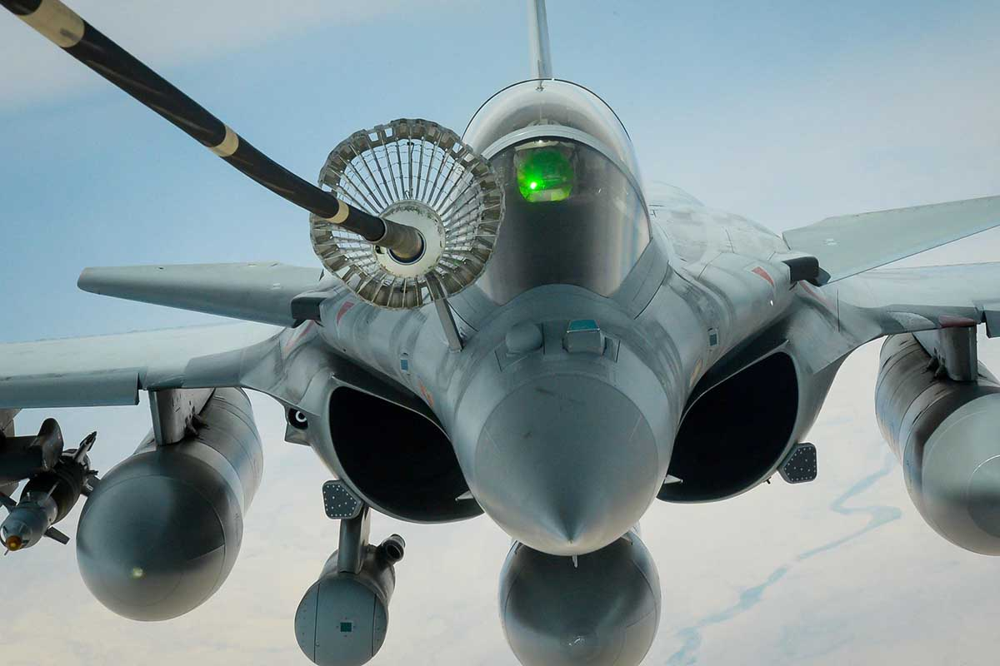
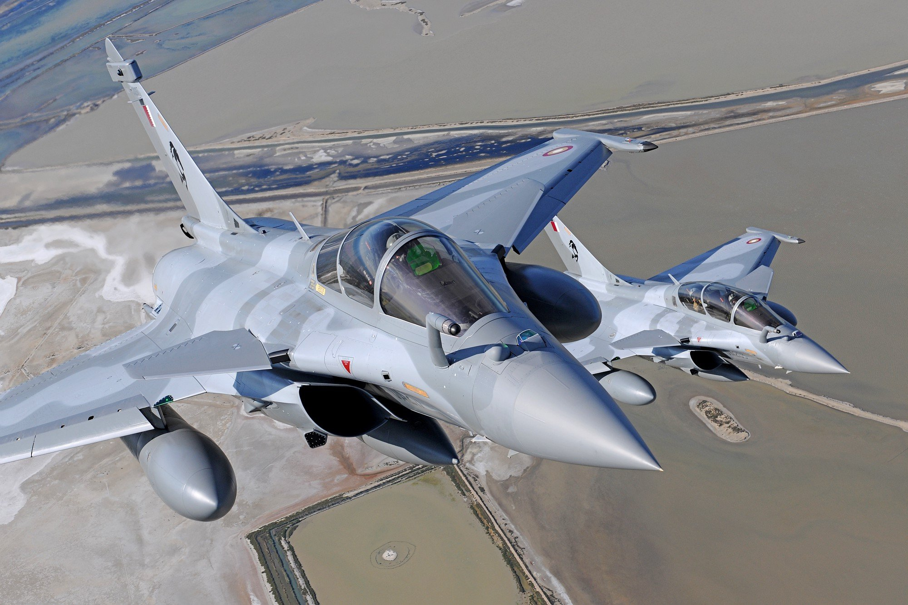
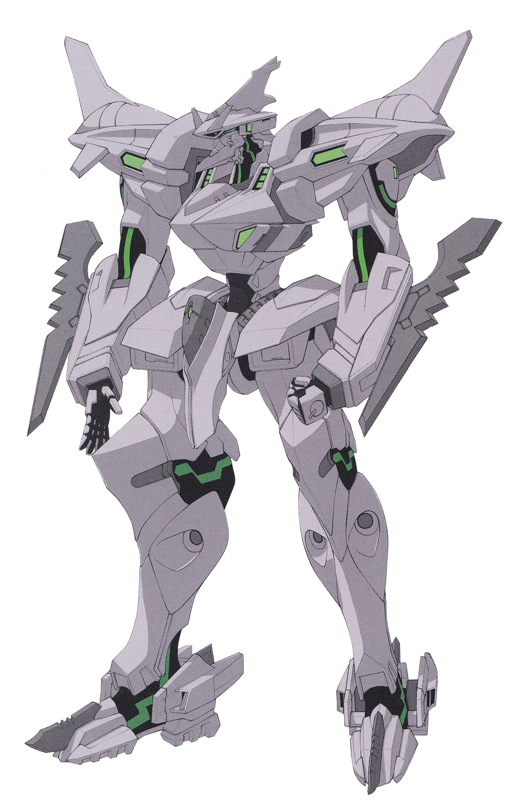

| Descrição | |
|---|---|
| Função: | Lutador multifuncional |
| Local de Origem: | França |
| Fabricante: | Dassault Aviação |
| Primeiro Voo: | Demonstração do Rafale A: 4 de julho de 1986 Rafale C: 19 de maio de 1991 |
| Introduzido em: | 18 de maio de 2001 |
| Status: | Em serviço |
| Utilziadores: | Força Aérea e Espacial Francesa Marinha Francesa Força Aérea Indiana Força Aérea Qatar Emiri |
| Produzido: | 1986 - Presente |
| Caractersiticas Gerais | |
| Tripulação: | 2 |
| Comprimento: | :15.27m |
| Altura: | 5.34m |
| Envergadura das Asas: | 10.90m |
| Area das Asas: | 45.7m² |
| Peso Vazio: | B:
C: M: |
| Peso Bruto: | 15.000kg |
| Peso Máximo de Decolagem: | 24.500kg |
| Capacidade de Combustivel: | C:4.700 kg interna para monolugares
B:4.400 kg para dois lugares C:16.550 L interno + 2.300 L em 2 tanques conformados + 8.500 L em 5 tanques de queda |
| Performace | |
| Motores: | 2 × turbofans Snecma M88-4e |
| Empuxo: |
|
| Velocidade Máxima: | 1.912 km/h Mach 1,8 |
| Alcance: | Não disponível ao publico |
| Alcance de Combate: | 1.850 km |
| Armamento | |
| Armas: | 1 canhão automático GIAT 30 /M791 de 30 mm (1,2 pol.) com 125 tiros |
| Hardpoint | 14 hardpoints externos para versões da Força Aérea e Espacial (Rafale B/C), 13 para versão da Marinha (Rafale M) com capacidade de 9.500 kg de combustível externo e munições, com provisões para transportar combinações de: |
| Misseis |
Ar-Ar:
Ar-Terra:
|
| Bombas |
|
O Dassault Rafale conhecido como "rajada de vento" ou "rajada de fogo"
é um bimotor francês , asa delta canard , caça multifuncional aeronaves projetadas e construídas
pela Dassault Aviation . Equipado com uma ampla gama de armas, o Rafale destina-se a realizar missões
de supremacia aérea , interdição , reconhecimento aéreo , apoio terrestre , ataque em profundidade, ataque
antinavio e dissuasão nuclear . O Rafale é referido como uma aeronave "omnirol" pela Dassault.

O programa de desenvolvimento da aeronave Rafale foi o produto final dos esforços de vários
países europeus para um caça comum. Em 1979, a Dassault-Breguet. A empresa contribuiu com o layout aerodinâmico
de um futuro caça bimotor e monoposto; no entanto, o projecto fracassou em 1981 devido aos diferentes requisitos
operacionais de cada país parceiro. Em 1983, o programa "Future European Fighter Aircraft" (FEFA) foi iniciado
para desenvolver conjuntamente um novo caça, embora os três últimos tivessem seus próprios desenvolvimentos de aeronaves.
As autoridades francesas imaginaram uma aeronave leve e multifuncional que - além de cumprir funções na força aérea e navais -
acreditava-se, seria atraente no mercado de exportação de caças. Isso contrastava com a exigência britânica de um interceptador
pesado de longo alcance.

O Rafaele já apareceu em diversos jogos, como em "War Thunder" e em "Muv Luv The Day After"

Um Rafaele na serie de jogos "Muv Luv"